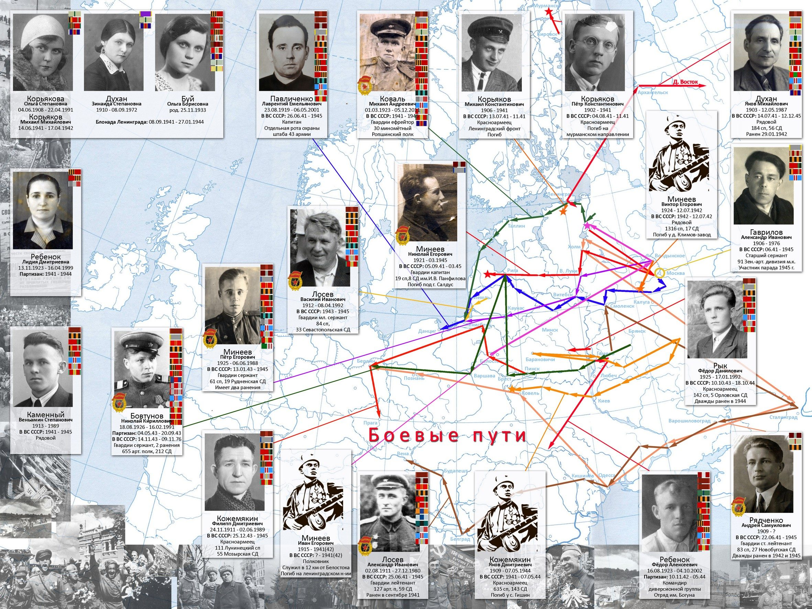

Республиканский конкурс «ПАТРИОТ.by»
Связь поколений: мы помним
Живая память поколений. Гомельский рубеж
Гомель — место, где начинается Беларусь. Этот сайт хранит его прошлое и не даёт нам его забыть, показывает настоящее и пробует представить, каким оно станет.
Начать путьПрошлое
Главные события в жизни края. Нажми на карточку, чтобы прочитать историю.
Карта памяти
Места, которые нельзя забывать. Выбери тип, чтобы отфильтровать точки.
Было и стало
Потяни ползунок, чтобы сравнить старое фото и современное.
Связь поколений
участник Великой Отечественной войны — нажми, чтобы узнать его историю
Их тоже помним
Братья и сёстры предков Серафимы, их мужья и жёны — тоже участники войны. Кто-то вернулся домой, кто-то погиб или пропал без вести.

Проверь себя
Настоящее
Что происходит в крае сегодня.
Будущее
Идеи развития родного края. Отметь то, что считаешь важным, и получи свой проект.
Как сделано
Технологии, которые использованы в проекте.